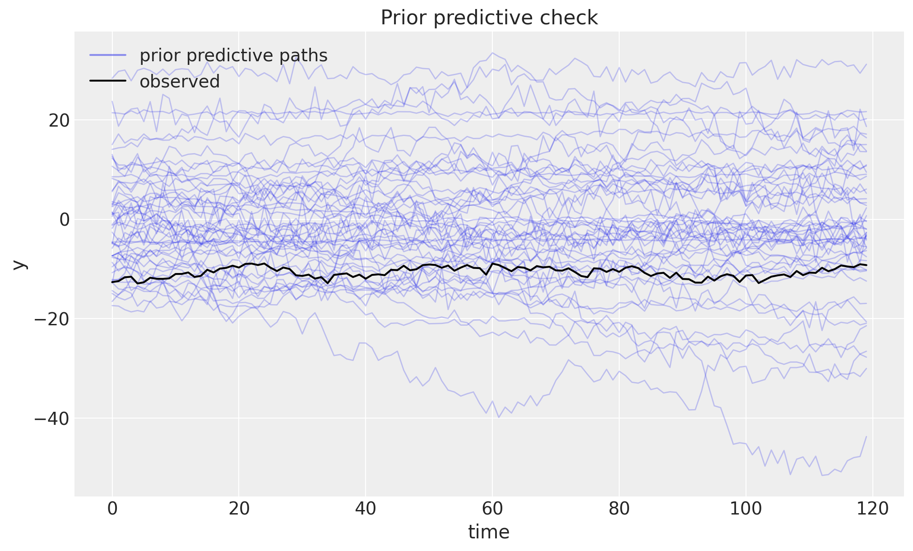
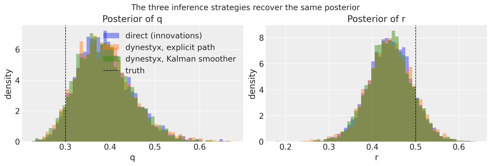
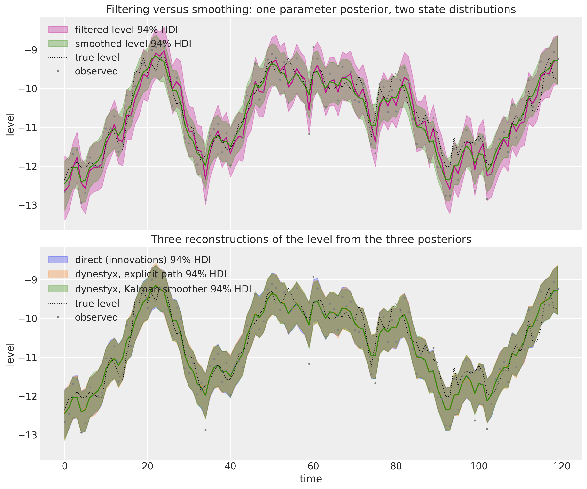
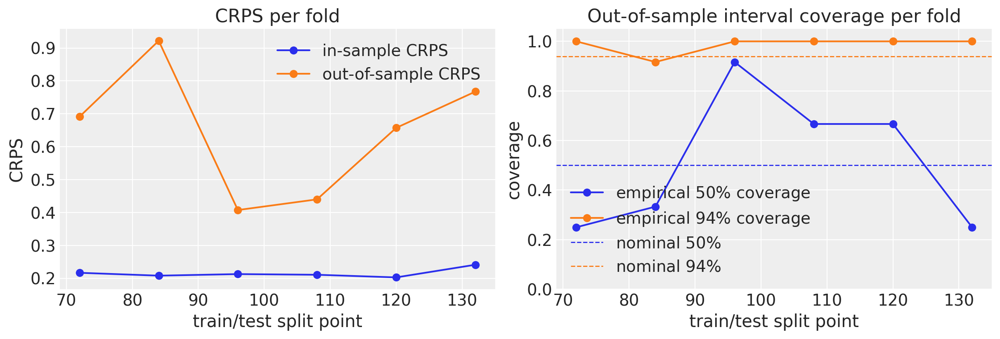

State Space Models with dynestyx and numpyro_forecast
Write a dynestyx state space model as a plain numpyro_forecast model, choose the inference strategy with a dynestyx handler (Kalman smoother or explicit latent path), and reuse the forecasting, in-sample and backtesting workflow of the package unchanged.
State Space Models with dynestyx and numpyro_forecast
In this notebook we write a dynestyx state space model as a numpyro_forecast model. We then fit it, forecast with it and backtest it with the drivers of the package, without changing them.
dynestyx is a probabilistic programming library for dynamical systems built on NumPyro. Its central object is a DynamicalModel, which bundles an initial condition, a state evolution and an observation model. Its primitive, dsx.sample, is interpreted by effect handlers. A Filter or a Smoother integrates the latent path out with a filtering algorithm (exactly with the Kalman filter for linear-Gaussian models, approximately with the ensemble, extended and unscented Kalman filters and with particle filters) and adds the marginal log likelihood, or its estimate, to the NumPyro trace. A LatentPathBuilder samples the path explicitly. A Simulator rolls the model forward in time.
numpyro_forecast is a forecasting workflow layer. A model is a plain function (covariates, data=None) built from model building blocks that register the "obs" and "forecast" sites. The drivers (forecast, predict_in_sample, to_datatree, backtest and the metrics) read those sites by name.
The two libraries compose at the trace level. We connect them with one new model building block, state_space_series. Its conditioner argument is the dynestyx handler that interprets dsx.sample over the observed window. The choice between integrating the latent path out (a Smoother) and sampling it explicitly (a LatentPathBuilder) is therefore a change of one argument.
We proceed as follows:
Prepare Notebook. We load the libraries and set the configuration.
The Building Block. We define state_space_series and explain its contract.
Local Level Model. We fit the same model three times: in the direct form of the package, with dynestyx sampling the path explicitly, and with dynestyx integrating it out with a Kalman smoother. We compare posteriors, sampler efficiency, forecasts, in-sample fits and the reconstructed latent level.
Seasonal Regression Model. We add a seasonal regression through the covariates, fit it with SVI and run the expanding-window backtest of the package on the dynestyx model, in and out of sample. This is the evaluation direction that the design document of this integration proposes.
Conclusion. We summarize the findings, the limitations and our recommendations.
Prepare Notebook
We load the necessary libraries and set the notebook’s configuration.
The block below is the whole integration. Its docstring states the contract. It takes the current call’s Horizon, a site name, the observed window y, a dynestyxDynamicalModel and a conditioner. The conditioner is the stack of dynestyx handlers that interpret dsx.sample over the observed window. It takes one of three forms:
Filter or Smoother: they compute the marginal log likelihood \log p(y_{1:T} \mid \theta) of the window and register it as a NumPyro factor. The joint density that NUTS or SVI sees is then p(\theta) \, p(y_{1:T} \mid \theta), with the latent path integrated out. The smoother also provides the smoothing distribution p(x_t \mid y_{1:T}, \theta) of every in-window state, which the filter does not. It computes it with a backward pass after the forward filter, so a full smoother evaluation costs more than a filter evaluation. The marginal log likelihood comes from the forward pass alone, and the smoothed states are deterministic sites that NumPyro recomputes once per MCMC transition, not once per leapfrog step. The compiled gradient of the log density therefore costs the same under both handlers, because JAX drops the backward pass from it. We measure both costs in the Model Diagnostics section. This is a property of the current implementation, not a guarantee for every backend or model.
LatentPathBuilder: it creates one sample site for the whole path and registers the joint density of states and observations as a factor. The sampler explores the path explicitly, as it does with the package’s own innovations. The difference is that dynestyx builds the path, so discretized continuous-time dynamics and observation models with missing values are available.
Discretizer: it can follow either of the above, as the second element of a sequence, and turns a continuous-time model into the discrete transition the conditioning handler consumes. We stay with discrete-time models here. The design document records the continuous-time recipe and its caveats.
The block has three modes, and h.data selects them. The observations themselves come from the y argument, which the model slices from covariates (the series doubles as a covariate, the same contract as ssoe). This is what lets a model call without data still reach the observed window.
Training (data present, no horizon): the block runs dsx.sample under the conditioner. The factor (and the path site, for the builder) enters the trace.
Forecasting (covariates longer than data): the block nests the conditioner inside a Simulator. dynestyx interprets this as a posterior rollout that starts from the conditioned distribution of the state at the last observed step (the smoothing distribution, the filtering distribution or the sampled path, which coincide there). The block registers the horizon draws as the "forecast" site.
In-sample predictive (data=None): the block draws the in-window states from the conditioner’s posterior over the path (the smoothing distribution, or the explicit path), samples one observation per step from the observation model and registers them as the "obs" site. data=None is a mode switch, not an absence of data. The in-sample predictive is a smoothing task, which is why a Filter conditioner raises in this mode.
The block owns the likelihood, so it also owns the two sites, like predict. It returns a StateSpaceResult with the state draws of the current mode, x_future over the horizon and x_in_sample over the window, so that a model can register its latent level.
Two details of the implementation matter for correctness:
Time grids. The Horizon counts the steps and the times argument places them. The block slices the observation times from times and takes the last future entries as the forecast times (any strictly increasing grid, the step index by default). The handlers differ in what they accept. A Filter rollout splits the prediction grid into segments on the host, so its grid must be a NumPy constant. A LatentPathBuilder indexes the grid inside a lax.scan, so its grid must be a jax array (a NumPy grid fails in the eager model call that NUTS makes at initialization). A Smoother rollout starts from one final anchor and accepts either. The block passes NumPy grids to a Filter or Smoother and jax grids to a LatentPathBuilder. The drivers run the model under jax.jit, so a grid derived from a traced covariate column would break the Filter case.
The anchor. The prediction grid starts at the last observed step, t_obs - 1, and the block drops the first returned row. The simulator’s first predicted state is the conditioned draw at predict_times[0] without a transition, so this anchor gives exactly one transition per horizon step. A grid that starts at t_obs would report the state of step t_obs - 1 as the forecast for t_obs.
Finally, create the handlers once, outside the model. They are dynestyx objects with state of their own, and the builder caches the observation layout it needs to run under jit.
StateSpaceHandler = Filter | Smoother | LatentPathBuilder | Discretizer"""A dynestyx handler that interprets ``dsx.sample`` over the observed window."""_CONDITIONING_HANDLERS = (Filter, Smoother, LatentPathBuilder)@dataclass(frozen=True)class StateSpaceResult:"""Draws produced by `state_space_series` (size-0 time axes when not applicable). Each field is filled in the mode that produces it and has a size-0 time axis otherwise: the ``future`` fields while forecasting, the ``in_sample`` fields when the model is called without data, none while training. The shapes carry no batch dims (panels are not supported). Attributes ---------- y_future Observation draws over the horizon, shape ``(future, obs)``; also registered as the ``"forecast"`` site. x_future Latent state draws over the horizon, shape ``(future, state)``. y_in_sample One draw of the in-sample predictive, shape ``(t_obs, obs)``; also registered as the ``"obs"`` site. x_in_sample The in-window state draw behind ``y_in_sample``, shape ``(t_obs, state)``: the conditioner's posterior over the path (the smoothing distribution, or the explicit path), one draw per model call. """ y_future: Float[Array, " future obs"] x_future: Float[Array, " future state"] y_in_sample: Float[Array, " time obs"] x_in_sample: Float[Array, " time state"]def _handler_stack( conditioner: StateSpaceHandler | Sequence[StateSpaceHandler],) ->tuple[StateSpaceHandler, ...]:"""Normalize ``conditioner`` to the tuple of handlers entered outermost first.""" stack =tuple(conditioner) ifisinstance(conditioner, Sequence) else (conditioner,) conditioning = [i for i, h inenumerate(stack) ifisinstance(h, _CONDITIONING_HANDLERS)]iflen(conditioning) !=1: msg = ("conditioner needs exactly one Filter, Smoother or LatentPathBuilder "f"(optionally followed by a Discretizer), got {[type(h).__name__for h in stack]}" )raiseValueError(msg)if conditioning[0] !=0: msg = ("the Filter, Smoother or LatentPathBuilder must come first (outermost) in conditioner" )raiseValueError(msg)return stackdef _time_grid(times: np.ndarray |None, h: Horizon) -> np.ndarray:"""Full-horizon float times: ``times[:duration]``, or ``0, 1, ..., duration - 1``."""if times isNone:return np.arange(h.duration, dtype=np.float32) grid = np.asarray(times, dtype=np.float32)if grid.ndim !=1or grid.shape[0] < h.duration: msg =f"times must be a 1-D array with at least duration={h.duration} entries, got {grid.shape}"raiseValueError(msg) grid = grid[: h.duration]if np.any(np.diff(grid) <=0): msg ="times must be strictly increasing"raiseValueError(msg)return griddef _in_sample_states( name: str, conditioner: StateSpaceHandler, result: Any) -> Float[Array, " time state"]:"""One draw of every in-window state from the conditioner's posterior over the path."""ifisinstance(conditioner, LatentPathBuilder):return result.state_pathifisinstance(conditioner, Smoother): dists = result.distsifnot dists ornotisinstance(dists[0], dist.MultivariateNormal): msg = ("the in-sample predictive needs a Gaussian smoother (per-time MultivariateNormal)" )raiseTypeError(msg) mean = jnp.stack([d.mean for d in dists]) cov = jnp.stack([d.covariance_matrix for d in dists]) state_dist = dist.MultivariateNormal(mean, covariance_matrix=cov).to_event(1)return jnp.asarray(numpyro.sample(f"{name}_smoothed_states", state_dist)) msg = ("the in-sample predictive (a model call with data=None, as made by predict_in_sample ""and to_datatree) needs a Smoother or a LatentPathBuilder conditioner; a Filter only ""carries the filtering distribution p(x_t | y_1:t)." )raiseValueError(msg)def state_space_series( h: Horizon, name: str, y: Float[Array, " time obs"], dynamics: DynamicalModel,*, conditioner: StateSpaceHandler | Sequence[StateSpaceHandler], controls: Float[Array, " duration control"] |None=None, times: np.ndarray |None=None, simulator_config: SimulatorConfig |None=None,) -> StateSpaceResult:"""Condition a dynestyx model on the observed window and predict with it. The conditioner is the ``dynestyx`` handler stack that interprets ``dsx.sample`` over the observed window, entered outermost first: a ``Filter`` or a ``Smoother`` adds the marginal log likelihood of the window as a NumPyro factor (the latent path is integrated out), a ``LatentPathBuilder`` samples the path explicitly, and an optional ``Discretizer`` after it turns a continuous-time model into the discrete transition the others consume. The block adds the horizon bookkeeping on top and registers the two sites the package drivers read. While forecasting it nests the stack inside a ``Simulator``, whose posterior rollout starts from the conditioned distribution of the state at the last observed step, and registers the horizon draws as ``"forecast"``. When the model is called without data it draws the in-window states from the conditioner's posterior over the path (the smoothing distribution, or the explicit path), samples one observation per step from the observation model, and registers them as ``"obs"``: the in-sample predictive that ``predict_in_sample`` and ``to_datatree`` read. The guide never sees the rollout because fitting happens with ``h.future == 0``. Parameters ---------- h The horizon for the current model call. ``h.data`` selects the mode (training when present, in-sample predictive when ``None``); the observations themselves come from ``y``. name Prefix of the ``dynestyx`` sites. y The observed window, shape ``(t_obs, obs)`` with time at axis ``-2``, sliced from ``covariates`` by the caller (the contract of ``ssoe``, so that model calls without data still reach the observations). dynamics The ``dynestyx`` model; its observation dimension must match ``y``. conditioner ``Filter(filter_config=...)``, ``Smoother(smoother_config=...)`` or ``LatentPathBuilder(...)``, alone or as the first element of a sequence followed by a ``Discretizer(...)``. Create the handlers once outside the model and reuse them: the builder caches the observation layout it needs under ``jit``. A ``Filter`` cannot serve the in-sample predictive. controls Exogenous inputs over the full horizon, shape ``(duration, control)``, forwarded as ``ctrl_values`` on the full time grid. times Observation and forecast times over the full horizon, at least ``duration`` strictly increasing entries, a host-side NumPy array; ``None`` uses the step index. The last ``future`` entries are the forecast times. Irregular spacing matters for continuous-time dynamics and for time-varying parameters. simulator_config Forwarded to ``Simulator`` (solver options for continuous-time models that are not discretized). Returns ------- StateSpaceResult ``y_future`` and ``x_future`` while forecasting, ``y_in_sample`` and ``x_in_sample`` when called without data, size-0 time axes otherwise. Raises ------ ValueError If ``y`` does not cover exactly ``h.t_obs`` steps, if ``times`` is not a strictly increasing grid covering the horizon, if ``conditioner`` does not hold exactly one conditioning handler first, or if the in-sample predictive is requested with a ``Filter`` conditioner. TypeError If the in-sample predictive is requested with a non-Gaussian smoother. RuntimeError If the in-sample predictive runs outside a NumPyro ``seed`` handler. """if y.ndim <2or y.shape[-2] != h.t_obs: msg =f"y must have shape (t_obs={h.t_obs}, obs), got {y.shape}"raiseValueError(msg) stack = _handler_stack(conditioner) grid = _time_grid(times, h)# A Filter rollout segments the prediction grid on the host, so its grid must be a# NumPy constant under jit; a LatentPathBuilder indexes its grids inside a scan and# needs jax arrays; a Smoother accepts either. dynestyx annotates all of them as jax# Arrays, hence the untyped dict. explicit_path =any(isinstance(handler, LatentPathBuilder) for handler in stack) as_grid = jnp.asarray if explicit_path else np.asarray kwargs: dict[str, Any] = {"obs_times": as_grid(grid[: h.t_obs])}if controls isnotNone: kwargs |= {"ctrl_times": as_grid(grid), "ctrl_values": controls} empty_y = jnp.zeros((0, dynamics.observation_dim)) empty_x = jnp.zeros((0, dynamics.state_dim))if h.future >0:# Anchor at the last observed step: the simulator's first predicted state is the# conditioned draw at predict_times[0] with no transition, so that row is dropped. kwargs["predict_times"] = as_grid(grid[h.t_obs -1 :])with numpyro.handlers.trace() as tr, ExitStack() as handlers: handlers.enter_context(Simulator(simulator_config, n_simulations=1))for handler in stack: handlers.enter_context(handler) dsx.sample(name, dynamics, obs_values=y, **kwargs) y_future = tr[f"{name}_predicted_observations"]["value"][0, 1:, :] x_future = tr[f"{name}_predicted_states"]["value"][0, 1:, :] numpyro.deterministic("forecast", y_future)return StateSpaceResult( y_future=y_future, x_future=x_future, y_in_sample=empty_y, x_in_sample=empty_x )with ExitStack() as handlers:for handler in stack: handlers.enter_context(handler) result = dsx.sample(name, dynamics, obs_values=y, **kwargs)if h.data isnotNone:return StateSpaceResult( y_future=empty_y, x_future=empty_x, y_in_sample=empty_y, x_in_sample=empty_x ) x = _in_sample_states(name, stack[0], result) key = numpyro.prng_key()if key isNone: msg ="the in-sample predictive draws observations and needs an active seed handler"raiseRuntimeError(msg) u =Noneif controls isNoneelse controls[..., : h.t_obs, :]def emit(x_t: Array, u_t: Array |None, t: Array, key_t: Array) -> Array:return jnp.asarray(dynamics.observation_model(x_t, u_t, t).sample(key_t)) in_axes = (0, Noneif u isNoneelse0, 0, 0) keys = random.split(key, h.t_obs) y_in_sample = jax.vmap(emit, in_axes=in_axes)(x, u, jnp.asarray(grid[: h.t_obs]), keys) numpyro.deterministic("obs", y_in_sample)return StateSpaceResult( y_future=empty_y, x_future=empty_x, y_in_sample=y_in_sample, x_in_sample=x )
Local Level Model
The local level model is the simplest structural time series model. The latent level x_t is a random walk with state noise scale q, and the observation y_t is the level plus noise with scale r:
In dynestyx this is LTI_discrete (linear time-invariant, discrete time) with transition matrix A = 1, state covariance Q = q^2, observation matrix H = 1 and observation covariance R = r^2. We write the dynamics as a function of the two scales, so the same object serves the data simulation, the prior predictive check and every inference strategy.
We simulate 144 steps from the model with known scales q = 0.3 and r = 0.5 using dsx.simulate, the pure-JAX generator of dynestyx. It takes an explicit key and registers no NumPyro sites. We hold out the last 24 steps as the test window.
The package expects time at axis -2 and the observation dimension at axis -1, which is the layout dsx.simulate returns. There are no exogenous inputs in this example, so the covariate array is the series itself. The models read their observed window from its first t_obs rows; the trailing rows only fix the forecast horizon.
The level moves as a random walk, and the observations scatter around it with the larger noise scale r.
Prior Predictive Checks
The priors on both scales are \text{HalfNormal}(1), and the initial level is \text{Normal}(0, 10). Before fitting anything, we look at the series these priors generate.
For a state space model the prior predictive is a forward simulation. We write a small generative model in native dynestyx style (dsx.sample with predict_times only) and run it under a Simulator with NumPyro’s Predictive.
def local_level_prior(predict_times: Array) ->None:"""Sample the scales from their priors and simulate a path from the local level model."""# jnp.asarray only narrows numpyro's union return type for the type checker. q = jnp.asarray(numpyro.sample("q", dist.HalfNormal(1.0))) r = jnp.asarray(numpyro.sample("r", dist.HalfNormal(1.0))) dsx.sample("f", local_level_dynamics(q, r), predict_times=predict_times)rng_key, rng_subkey = random.split(rng_key)with Simulator(n_simulations=1): prior_draws = Predictive(local_level_prior, num_samples=50)( rng_subkey, predict_times=jnp.asarray(time_grid[:t_obs]) )prior_paths = np.asarray(prior_draws["f_observations"][:, 0, :, 0]) # (50, t_obs)fig, ax = plt.subplots()ax.plot(time_index[:t_obs], prior_paths.T, color="C0", alpha=0.25, lw=1)ax.plot([], [], color="C0", alpha=0.5, label="prior predictive paths")ax.plot(time_index[:t_obs], train_data[:, 0], color="black", lw=1.5, label="observed")ax.legend(loc="upper left")ax.set(title="Prior predictive check", xlabel="time", ylabel="y");

The prior paths cover the observed series without being too wide, which is good.
Model Specification
All models are plain NumPyro functions (covariates, data=None) with the same priors. They differ only in how the latent level enters the trace.
The direct model is the idiomatic numpyro_forecast form. innovations samples one innovation per time step (with a LocScaleReparam to soften the funnel between q and the path), the level is their cumulative sum plus the initial level x0, and predict registers the likelihood. The sampler explores t_{\text{obs}} + 3 dimensions. One small difference with the dynestyx model: here the first observation sees x0 plus one innovation, while dynestyx observes its initial state directly. With a \text{Normal}(0, 10) prior on the initial level this difference has no visible effect on the posteriors.
The two dynestyx models share one function of the conditioner. With a LatentPathBuilder the path is explicit: one sample site of shape (t_{\text{obs}}, 1) plus the two scales. With a Smoother the Kalman smoother integrates the path out exactly, and the sampler explores 2 dimensions.
We use KFSmootherConfig(filter_source="cd_dynamax"), the exact Rauch-Tung-Striebel smoother on the backend that was cheapest per gradient in our measurements for a short series on the CPU. The filter_source="cuthbert" backend adds support for missing observations and time-varying parameters at a higher cost per gradient. We also build the Filter variant of the model, with the matching KFConfig(), for the cost measurement and the filtering view of the level below.
Every model registers a level deterministic site when it is called without data. The direct model computes its level in place, and the dynestyx models take it from the x_in_sample field of the block’s result, which is the in-window state draw behind the in-sample predictive. We read that site later to compare the three reconstructions of the level.
def local_level_direct(covariates: Array, data: Array |None=None) ->None:"""Local level model with the innovations sampled explicitly.""" h = Horizon.from_data(covariates, data) q = jnp.asarray(numpyro.sample("q", dist.HalfNormal(1.0))) r = jnp.asarray(numpyro.sample("r", dist.HalfNormal(1.0))) x0 = jnp.asarray(numpyro.sample("x0", dist.Normal(0.0, 10.0))) drift = innovations(h, "drift", lambda: dist.Normal(0.0, q), reparam=LocScaleReparam(0)) level = x0 + jnp.cumsum(drift, axis=-2)if h.data isNone: numpyro.deterministic("level", level) predict(h, dist.Normal(0.0, r), level)def local_level_state_space(conditioner: StateSpaceHandler) -> ForecastModel:"""Build the local level model conditioned by a dynestyx handler."""def model(covariates: Array, data: Array |None=None) ->None: h = Horizon.from_data(covariates, data) y = covariates[..., : h.t_obs, :] # the observed window travels in the covariates q = jnp.asarray(numpyro.sample("q", dist.HalfNormal(1.0))) r = jnp.asarray(numpyro.sample("r", dist.HalfNormal(1.0))) result = state_space_series(h, "f", y, local_level_dynamics(q, r), conditioner=conditioner)if h.data isNone: numpyro.deterministic("level", result.x_in_sample)return modelsmoother = Smoother(smoother_config=KFSmootherConfig(filter_source="cd_dynamax"))local_level_latent = local_level_state_space(LatentPathBuilder())local_level_smoothed = local_level_state_space(smoother)local_level_filtered = local_level_state_space(Filter(filter_config=KFConfig()))
Model Fitting
We run the same sampler budget on the three models: 4 chains of 1{,}000 warmup and 1{,}000 sampling steps. The num_steps extra field records the number of leapfrog steps of the sampling phase, one gradient evaluation each, which is where NUTS spends its time. Warmup steps are not counted, but they are part of the wall time.
mcmc.get_samples() returns the flat posterior dictionary that the package drivers consume. For the dynestyx models it also carries the deterministic sites their handlers record (f_marginal_loglik, f_state_path, …).
def fit_nuts( rng_key: Array, model: ForecastModel, data: Array, covariates: Array,*, num_chains: int=4, num_warmup: int=1_000, num_samples: int=1_000,) ->tuple[MCMC, float]:"""Fit ``model`` with NUTS and return the sampler and the wall time in seconds.""" mcmc = MCMC( NUTS(model), num_warmup=num_warmup, num_samples=num_samples, num_chains=num_chains, chain_method="sequential", progress_bar=False, ) start = time.perf_counter() mcmc.run(rng_key, covariates, data, extra_fields=("num_steps",)) jax.block_until_ready(mcmc.get_samples())return mcmc, time.perf_counter() - startmodels = {"direct (innovations)": local_level_direct,"dynestyx, explicit path": local_level_latent,"dynestyx, Kalman smoother": local_level_smoothed,}fits: dict[str, tuple[MCMC, float]] = {}for label, model in models.items(): rng_key, rng_subkey = random.split(rng_key) fits[label] = fit_nuts(rng_subkey, model, train_data, covariates_train)print(f"{label:>26}: {fits[label][1]:6.1f} s")posteriors = {label: mcmc.get_samples() for label, (mcmc, _) in fits.items()}
direct (innovations): 16.0 s
dynestyx, explicit path: 10.0 s
dynestyx, Kalman smoother: 15.2 s
Model Diagnostics
Before looking at the results, we check some diagnostics. The posteriors of the two scales must agree with each other, because the three models describe the same process and the smoother integrates the level out exactly. What differs is the work the sampler has to do.
We collect the effective sample sizes and \hat{R} with ArviZ (the (chain, draw) layout comes from get_samples(group_by_chain=True)) next to the wall time and the number of gradient evaluations.
def summarize_fit(mcmc: MCMC, label: str, wall: float) -> pd.DataFrame:"""One-row table of posterior means, diagnostics and sampler cost for ``q`` and ``r``.""" grouped = mcmc.get_samples(group_by_chain=True) tree = az.from_dict({"posterior": {name: np.asarray(grouped[name]) for name in ("q", "r")}}) summary = az.summary(tree, var_names=["q", "r"], round_to="none") num_steps =int(np.asarray(mcmc.get_extra_fields(group_by_chain=True)["num_steps"]).sum())return pd.DataFrame( {"q mean": [summary.loc["q", "mean"]],"q sd": [summary.loc["q", "sd"]],"r mean": [summary.loc["r", "mean"]],"r sd": [summary.loc["r", "sd"]],"ess_bulk q": [summary.loc["q", "ess_bulk"]],"ess_bulk r": [summary.loc["r", "ess_bulk"]],"r_hat q": [summary.loc["q", "r_hat"]],"r_hat r": [summary.loc["r", "r_hat"]],"leapfrog steps": [num_steps],"wall time (s)": [wall], }, index=[label], )comparison = pd.concat([summarize_fit(mcmc, label, wall) for label, (mcmc, wall) in fits.items()])print(f"truth: q = {q_true}, r = {r_true}")comparison.round( {"q mean": 3,"q sd": 3,"r mean": 3,"r sd": 3,"ess_bulk q": 0,"ess_bulk r": 0,"r_hat q": 3,"r_hat r": 3,"wall time (s)": 1, })
truth: q = 0.3, r = 0.5
q mean
q sd
r mean
r sd
ess_bulk q
ess_bulk r
r_hat q
r_hat r
leapfrog steps
wall time (s)
direct (innovations)
0.389
0.061
0.441
0.051
726.0
763.0
1.009
1.008
1013890
16.0
dynestyx, explicit path
0.389
0.064
0.441
0.053
564.0
974.0
1.013
1.005
66528
10.0
dynestyx, Kalman smoother
0.387
0.061
0.440
0.051
1590.0
1694.0
1.003
1.004
17992
15.2
The three posterior means agree closely and the \hat{R} values are close to 1. All three fits place the true values inside their bulk. With 120 observations the scales are only moderately well identified, so a posterior mean one to one and a half standard deviations away from the truth is not surprising.
The smoothed model reaches the largest effective sample size with a small fraction of the gradient evaluations. It moves in a 2-dimensional posterior instead of a 123-dimensional one, where the likelihood still couples q to every innovation after the non-centered reparameterization.
The explicit path built by dynestyx sits between the two. It needs fewer gradients than the direct model but mixes less well on q. A plausible reason is that the builder samples the path in centered form and has no reparameterization option, but we did not test this.
Each smoother gradient is more expensive (a Kalman pass over the window instead of a sum of Gaussian log densities), so on a short series on the CPU the wall times are similar. The advantage grows with the length of the series: the dimension of the direct posterior grows with it, while the dimension the smoother’s sampler explores stays 2 and the cost of a Kalman pass is linear in the length. On accelerators the cuthbert backend can also use its associative (parallel-in-time) scan, which we do not measure here.
We now measure the two costs that the building block section refers to: a full model evaluation, which returns the marginal log likelihood and the state estimates, and the gradient of the log density, which is what NUTS and SVI evaluate. Both are compiled with jax.jit on the training window.
def evaluation_cost(model: ForecastModel, site: str, num_evals: int=1_000) ->float:"""Milliseconds per compiled model evaluation, returning the log likelihood and ``site``."""def run(params: dict[str, Array]) ->tuple[Array, Array]: substituted = numpyro.handlers.substitute(model, data=params) tr = numpyro.handlers.trace(substituted).get_trace(covariates_train, train_data)return tr["f_marginal_loglik"]["value"], tr[site]["value"]return _timed(jax.jit(run), num_evals)def gradient_cost(model: ForecastModel, num_evals: int=1_000) ->float:"""Milliseconds per compiled ``value_and_grad`` of the log density of ``model``."""def log_joint(params: dict[str, Array]) -> Array:return log_density(model, (covariates_train, train_data), {}, params)[0]return _timed(jax.jit(jax.value_and_grad(log_joint)), num_evals)def _timed(fn: Callable[[dict[str, Array]], Any], num_evals: int) ->float:"""Average wall time in milliseconds of ``fn`` at the true scales, after compilation.""" params = {"q": jnp.asarray(q_true), "r": jnp.asarray(r_true)} jax.block_until_ready(fn(params)) start = time.perf_counter()for _ inrange(num_evals): out = fn(params) jax.block_until_ready(out)return (time.perf_counter() - start) / num_evals *1e3pd.DataFrame( {"evaluation (ms)": {"Filter": evaluation_cost(local_level_filtered, "f_filtered_states_mean"),"Smoother": evaluation_cost(local_level_smoothed, "f_smoothed_states_mean"), },"gradient (ms)": {"Filter": gradient_cost(local_level_filtered),"Smoother": gradient_cost(local_level_smoothed), }, }).round(3)
evaluation (ms)
gradient (ms)
Filter
0.056
0.171
Smoother
0.088
0.175
The full evaluation is more expensive under the Smoother, which is the backward pass. The gradient costs the same under both handlers, because the marginal log likelihood depends on the forward pass only and JAX drops the unused backward pass from the compiled gradient.
Next, we overlay the three posteriors of the two scales.
colors = {label: f"C{i}"for i, label inenumerate(models)}fig, axes = plt.subplots(nrows=1, ncols=2, figsize=(12, 4), layout="constrained")for ax, name, truth inzip(axes, ("q", "r"), (q_true, r_true), strict=True): values = {label: np.asarray(post[name]) for label, post in posteriors.items()} bins = np.linspace(min(v.min() for v in values.values()), max(v.max() for v in values.values()), 60 )for label, v in values.items(): ax.hist(v, bins=bins, density=True, alpha=0.45, color=colors[label], label=label) ax.axvline(truth, color="black", ls="--", lw=1, label="truth") ax.set(title=f"Posterior of {name}", xlabel=name, ylabel="density")axes[0].legend(loc="upper right")fig.suptitle("The three inference strategies recover the same posterior", fontsize=14);

The three histograms lie on top of each other, and the truth sits inside the bulk of each posterior.
Forecast
Forecasting uses the package’s forecast driver in all three cases. It runs Predictive over the full-horizon covariates and returns the "forecast" site with one path per posterior draw.
For the direct model the in-sample innovations are replayed from the posterior and the future ones are drawn from the prior. For the dynestyx models every draw conditions again on the training window with its own (q, r) (the smoother recomputes the smoothing distribution, the builder reconstructs the posterior path), and the simulator rolls the conditioned state forward.
This re-conditioning is one vectorized pass over the window per draw, which is cheap here. For long windows or particle filters, the design document records a cached-anchor rollout as the alternative.
The driver is jitted and vectorized over the draws, and the dynestyx handlers inside the model run under that jit and vmap without special treatment. We define two small helpers for the HDI bands and their labels, then forecast with the three posteriors.
def hdi_over_draws(draws: Array | np.ndarray, prob: float) ->tuple[np.ndarray, np.ndarray]:"""Lower and upper HDI bounds over the sample axis of ``(sample, time, 1)`` draws.""" da = xr.DataArray(np.asarray(draws)[..., 0], dims=["sample", "time"]) hdi = az.hdi(da, prob=prob, dim="sample") # (time, ci_bound)return hdi.sel(ci_bound="lower").to_numpy(), hdi.sel(ci_bound="upper").to_numpy()def hdi_label(prob: float, prefix: str="") ->str:r"""Legend label for an HDI band, e.g. ``$94\%$ HDI``.""" percent =f"{prob:.0%}".replace("%", r"\%")returnf"{prefix}${percent}$ HDI"hdi_probs = (0.5, 0.94)hdi_alphas = {0.5: 0.6, 0.94: 0.3} # 50% band darker, 94% band lighterforecasts: dict[str, Array | np.ndarray] = {}for label, model in models.items(): rng_key, rng_subkey = random.split(rng_key) forecasts[label] = forecast(rng_subkey, model, posteriors[label], train_data, covariates_full)print(f"{label:>26}: forecast draws {forecasts[label].shape}")
direct (innovations): forecast draws (4000, 24, 1)
dynestyx, explicit path: forecast draws (4000, 24, 1)
dynestyx, Kalman smoother: forecast draws (4000, 24, 1)
We plot the three forecast fans with their 50\% and 94\% HDI bands.
The three fans are the same forecast up to Monte Carlo error. The dynestyx models are not approximations of the direct one: they are the same model with a different parameterization for the sampler.
The same comparison in tabular form: point accuracy through MAE and RMSE, the CRPS as a proper score for the whole predictive distribution, and the empirical coverage of the central 50\% and 94\% intervals.
metric_fns = {"MAE": eval_mae,"RMSE": eval_rmse,"CRPS": eval_crps,"coverage (50%)": partial(eval_coverage, alpha=0.5),"coverage (94%)": partial(eval_coverage, alpha=0.94),}pd.DataFrame( { label: {name: float(fn(draws, test_data)) for name, fn in metric_fns.items()}for label, draws in forecasts.items() }).round(3)
direct (innovations)
dynestyx, explicit path
dynestyx, Kalman smoother
MAE
0.445
0.448
0.448
RMSE
0.590
0.585
0.591
CRPS
0.439
0.440
0.439
coverage (50%)
0.833
0.833
0.833
coverage (94%)
1.000
1.000
1.000
The metrics on the held-out window agree as well.
Posterior Predictive Checks
We now look at the in-sample posterior predictive. Because the observed window travels in the covariates, the package’s to_datatree applies to the dynestyx models as it does to any other. It restores the (chain, draw) structure, samples the in-sample posterior predictive by calling the model without data, and, because we pass the full-horizon covariates, writes the forecast into the predictions group.
Recall that data=None is a mode switch. The window still reaches the model through the covariates, so the in-sample predictive is the smoothing predictive p(y_t^{\text{rep}} \mid y_{1:T}, \theta) and not a prior predictive.
The three models produce it in three ways. The direct model replays its sampled path and adds observation noise. Under the LatentPathBuilder the block takes the posterior path that dynestyx reconstructs and adds the same noise. Under the Smoother the block draws every in-window state from the smoothing distribution p(x_t \mid y_{1:T}, \theta) and adds the noise. The first two are joint draws of the whole path, the third is a set of per-step marginal draws. At every single step the three are the same distribution, which is all the bands below show.
The tree carries the posterior, posterior_predictive, observed_data and constant_data groups and, because the covariates extend past the data, the predictions and predictions_constant_data groups, as for any other model of the package. We plot the three in-sample bands.
The three bands coincide and the in-sample CRPS values agree closely. The LatentPathBuilder conditioner serves the in-sample predictive as well as the smoother does, so both dynestyx strategies work with predict_in_sample and to_datatree.
Latent Level Reconstruction
This section separates two claims that are easy to mix up.
The parameter posterior is the same under a Filter and a Smoother. Both handlers put the same number in the trace, the marginal log likelihood \log p(y_{1:T} \mid \theta) of the window, because the Kalman smoother reads it from its forward filtering pass. The posterior p(\theta \mid y_{1:T}) is therefore the same under both handlers. We confirm this on the fitted model with numpyro.infer.util.log_density, at one parameter value.
smoothed_posterior = posteriors["dynestyx, Kalman smoother"]posterior_mean = {name: smoothed_posterior[name].mean() for name in ("q", "r")}handlers = {"Filter": local_level_filtered, "Smoother": local_level_smoothed}for handler, handler_model in handlers.items(): log_joint, _ = log_density(handler_model, (covariates_train, train_data), {}, posterior_mean)print(f"{handler:>8} handler: log joint density at the posterior mean {float(log_joint):.6f}")
Filter handler: log joint density at the posterior mean -125.142899
Smoother handler: log joint density at the posterior mean -125.142899
The two values agree. The draws we already have are draws from the posterior of either model, and we can read them under the other handler without refitting.
The distributions over the states are different. The filtering distribution p(x_t \mid y_{1:t}, \theta) conditions on the observations up to step t only. The smoothing distribution p(x_t \mid y_{1:T}, \theta) conditions on the whole window at every step. They answer different questions about the state, and only the second one gives the in-sample predictive of the section above.
Every model registers a level site when it is called without data. Calling Predictive with the posterior draws and the training covariates only, and asking for that site, gives one level path per posterior draw. The direct model replays x0 plus the cumulative sum of the sampled drift, the builder returns its posterior path, and the smoother draws from the smoothing distribution, the last two through the same x_in_sample field of the block’s result. All three condition on the whole window, so all three are smoothing reconstructions.
The filtered level needs one more step, because a Filter conditioner has no in-sample mode. Instead, we record the f_filtered_states_* sites with Predictive under the Filter model defined above, using the draws of the smoothed fit. Drawing one level per posterior draw from those per-step Gaussians mixes the state uncertainty and the parameter uncertainty into a single band, as the level site does for the other three.
direct (innovations): level draws (4000, 120, 1)
dynestyx, explicit path: level draws (4000, 120, 1)
dynestyx, Kalman smoother: level draws (4000, 120, 1)
The simulation gives us the true level, so we can score the four reconstructions against it. The smoother conditions on more data than the filter, so it should reconstruct the state better, both as a point estimate (RMSE) and as a distribution (CRPS).
true_level = x_true[:t_obs, None]level_metrics = {"RMSE": eval_rmse, "CRPS": eval_crps}reconstructions = {"dynestyx, Kalman filter": filtered_level, **levels}pd.DataFrame( { label: {name: float(fn(draws, true_level)) for name, fn in level_metrics.items()}for label, draws in reconstructions.items() }).round(3)
dynestyx, Kalman filter
direct (innovations)
dynestyx, explicit path
dynestyx, Kalman smoother
RMSE
0.325
0.278
0.278
0.278
CRPS
0.184
0.156
0.156
0.156
We plot the filtered and smoothed levels in the top panel, and the three level sites in the bottom panel.
panels = {"Filtering versus smoothing: one parameter posterior, two state distributions": {"filtered level": ("C3", filtered_level),"smoothed level": ( colors["dynestyx, Kalman smoother"], levels["dynestyx, Kalman smoother"], ), },"Three reconstructions of the level from the three posteriors": { label: (colors[label], draws) for label, draws in levels.items() },}fig, axes = plt.subplots( nrows=2, ncols=1, figsize=(12, 10), sharex=True, sharey=True, layout="constrained")for ax, (title, bands) inzip(axes, panels.items(), strict=True):for label, (color, draws) in bands.items(): lower, upper = hdi_over_draws(draws, 0.94) ax.fill_between( time_index[:t_obs], lower, upper, color=color, alpha=0.3, label=hdi_label(0.94, prefix=f"{label} "), ) ax.plot(time_index[:t_obs], draws.mean(axis=0)[:, 0], color=color, lw=1.5) ax.plot(time_index[:t_obs], x_true[:t_obs], color="black", lw=1, ls=":", label="true level") ax.plot(time_index[:t_obs], train_data[:, 0], ".", color="gray", ms=4, label="observed") ax.legend(loc="upper left") ax.set(title=title, ylabel="level")axes[-1].set(xlabel="time");

In the top panel the filtered band is wider at every step, and widest at the start of the window, where few observations have entered it. Its mean reacts to each new observation and lags the level. The smoothed band conditions on the whole window at every step, so it is narrower and closer to the truth, and the table above confirms it with the lower RMSE and CRPS against the true level. The two bands are two different distributions over the state, not two views of one distribution.
In the bottom panel the three reconstructions coincide. The direct model, the explicit path built by dynestyx and the smoother recover the same level from the same posterior, and the two dynestyx models did so through the same x_in_sample field.
Seasonal Regression Model
The package routes everything a model needs at prediction time through the covariates array, which spans the full horizon. In this example the array carries two things. The observed series sits in its first column, which the model reads back as the observed window. Fourier features fill the remaining columns, which the block forwards to dynestyx as control inputs (ctrl_values) on a time grid that covers both the observed and the predicted steps.
The seasonal pattern enters the observation equation as a regression on those features with coefficients \beta. With u_t the row of features at step t:
The seasonal pattern is visible on top of the moving level.
Model Specification
The model splits the covariate array into the observed window and the controls, adds a \text{Normal}(0, 1) prior on the four coefficients, and conditions with the same smoother as before.
def seasonal_level_state_space(conditioner: StateSpaceHandler) -> ForecastModel:"""Build the local level plus seasonal regression model conditioned by a dynestyx handler."""def model(covariates: Array, data: Array |None=None) ->None: h = Horizon.from_data(covariates, data) y = covariates[..., : h.t_obs, :1] # the observed series is the first column controls = covariates[..., 1:] # the Fourier features span the full horizon q = jnp.asarray(numpyro.sample("q", dist.HalfNormal(1.0))) r = jnp.asarray(numpyro.sample("r", dist.HalfNormal(1.0))) beta = jnp.asarray( numpyro.sample("beta", dist.Normal(0.0, 1.0).expand([controls.shape[-1]]).to_event(1)) ) state_space_series( h,"f", y, seasonal_level_dynamics(q, r, beta), conditioner=conditioner, controls=controls, )return modelseasonal_level_smoothed = seasonal_level_state_space( Smoother(smoother_config=KFSmootherConfig(filter_source="cd_dynamax")))
Model Fitting
Variational inference is the other standard path in the package, and it works on the smoothed model without changes. AutoNormal puts a mean-field Gaussian on the six unconstrained parameters and Trace_ELBO includes the smoother’s factor.
Because the level is integrated out, the guide does not have to approximate a t_{\text{obs}}-dimensional latent path, which is where mean-field guides usually underestimate uncertainty. We draw the posterior with draw_posterior and forecast as before.
The forecast follows the seasonal pattern into the test window, and the bands widen slowly with the horizon.
Expanding-Window Backtest
A single split scores one held-out window. backtest moves the train/test boundary forward, refits from scratch and forecasts the next window, so every later part of the series is scored out of sample once.
The loop delegates fitting and forecasting to two closures we write. forecast_fn fits the model with NUTS on the fold’s training window and passes the draws to forecast. in_sample_fn does the same and passes them to predict_in_sample, so that with eval_train=True every fold is also scored in sample.
The dynestyx model needs no adapter for any of this. It is a numpyro_forecast model, and the closures are the same ones the other examples use. We size the folds at 12 steps (test_window=12, stride=12) and seed the first training window with the first 72 observations, which gives six folds.
def fit_fold( rng_key: Array, model: ForecastModel, train_data: Array, train_covariates: Array) ->dict:"""NUTS on one fold: 2 chains of 500 warmup and 500 draws, flattened.""" mcmc, _ = fit_nuts( rng_key, model, train_data, train_covariates, num_chains=2, num_warmup=500, num_samples=500 )return mcmc.get_samples()def forecast_fn( rng_key: Array, model: ForecastModel, train_data: Array, train_covariates: Array, full_covariates: Array, num_samples: int,*, batch_size: int|None=None,) -> Array | np.ndarray:"""Fit ``model`` on the training window with NUTS and forecast the test horizon.""" key_fit, key_fc = random.split(rng_key) fold_posterior = fit_fold(key_fit, model, train_data, train_covariates)return forecast( key_fc, model, fold_posterior, train_data, full_covariates, batch_size=batch_size )def in_sample_fn( rng_key: Array, model: ForecastModel, train_data: Array, train_covariates: Array, num_samples: int,*, batch_size: int|None=None,) -> Array | np.ndarray:"""Fit ``model`` on the training window with NUTS and score its in-sample fit.""" key_fit, key_pred = random.split(rng_key) fold_posterior = fit_fold(key_fit, model, train_data, train_covariates)return predict_in_sample( key_pred, model, fold_posterior, train_covariates, batch_size=batch_size )backtest_metrics = {"crps": eval_crps,"coverage_50": partial(eval_coverage, alpha=0.5),"coverage_94": partial(eval_coverage, alpha=0.94),}rng_key, rng_subkey = random.split(rng_key)start = time.perf_counter()results = backtest( rng_subkey, y_seasonal, covariates_seasonal,lambda: seasonal_level_smoothed, forecast_fn=forecast_fn, in_sample_fn=in_sample_fn, metrics=backtest_metrics, test_window=12, stride=12, min_train_window=72, num_samples=1_000, # 2 chains x 500 draws, what fit_fold returns eval_train=True, keep_predictions=True,)print(f"backtest: {len(results)} folds in {time.perf_counter() - start:.1f} s")results_to_dataframe(results).round(3)
backtest: 6 folds in 120.5 s
t0
t1
t2
num_samples
walltime
metric_crps
metric_coverage_50
metric_coverage_94
train_metric_crps
train_metric_coverage_50
train_metric_coverage_94
0
0
72
84
1000
7.358
0.691
0.250
1.000
0.217
0.708
1.000
1
0
84
96
1000
14.058
0.922
0.333
0.917
0.208
0.714
1.000
2
0
96
108
1000
8.922
0.408
0.917
1.000
0.213
0.740
1.000
3
0
108
120
1000
10.206
0.440
0.667
1.000
0.211
0.759
1.000
4
0
120
132
1000
10.044
0.657
0.667
1.000
0.203
0.767
1.000
5
0
132
144
1000
9.109
0.767
0.250
1.000
0.241
0.712
0.992
Every fold reports its window, its out-of-sample scores and, with eval_train=True, its in-sample scores. Overlaying the out-of-sample forecast of every fold on the series gives the rolling-origin view. Each band starts where its training window ends, and the dashed lines mark the successive splits.
The bands track the series across all six folds. Finally, we look at the per-fold scores.
split_points = [r.t1 for r in results]fig, axes = plt.subplots(nrows=1, ncols=2, figsize=(12, 4), layout="constrained")axes[0].plot( split_points, [r.train_metrics["crps"] for r in results],"o-", color="C0", label="in-sample CRPS",)axes[0].plot( split_points, [r.metrics["crps"] for r in results],"o-", color="C1", label="out-of-sample CRPS",)axes[0].legend()axes[0].set(xlabel="train/test split point", ylabel="CRPS", title="CRPS per fold")axes[1].plot( split_points, [r.metrics["coverage_50"] for r in results],"o-", color="C0", label=r"empirical $50\%$ coverage",)axes[1].plot( split_points, [r.metrics["coverage_94"] for r in results],"o-", color="C1", label=r"empirical $94\%$ coverage",)axes[1].axhline(0.5, color="C0", ls="--", lw=1, label=r"nominal $50\%$")axes[1].axhline(0.94, color="C1", ls="--", lw=1, label=r"nominal $94\%$")axes[1].legend(loc="lower left")axes[1].set( xlabel="train/test split point", ylabel="coverage", title="Out-of-sample interval coverage per fold", ylim=(0, 1.05),);

The in-sample CRPS is stable across folds and well below the out-of-sample CRPS, as expected for a smoothing predictive that has seen the observations it scores.
The out-of-sample CRPS varies more from fold to fold, because each fold scores only 12 observations and the level of the series can drift away from the forecast within a window.
The empirical coverage of the central 50\% interval moves around the nominal level from fold to fold, and the 94\% interval covers all or all but one of the 12 observations in every fold. With 12 observations per fold each observation moves the coverage by about 0.08, so this variation is expected.
Conclusion
Key Findings
One block, one argument. A dynestyx model becomes a numpyro_forecast model through state_space_series, and the handler stack passed as its conditioner is the inference strategy. A Smoother (or Filter) integrates the latent path out, a LatentPathBuilder samples it explicitly, a Discretizer after either handles continuous-time dynamics, and switching between them is a change of one argument.
The drivers work without changes. The block owns the likelihood and registers the horizon rollout as "forecast" and the in-sample predictive as "obs". forecast, predict_in_sample, to_datatree, backtest (in and out of sample) and the metrics work on it under the same jit and vmap as for every other model.
The three strategies agree. On the local level model the posteriors, the forecasts, the in-sample bands and the reconstructed level coincide across the direct model, the explicit path and the smoother.
The smoother is the efficient choice. On linear-Gaussian models it is exact, and the sampler explores the parameters only. It needs a small fraction of the gradient evaluations of the direct model for a larger effective sample size, and the smoothing distribution gives the in-sample predictive without a second fit. The backward pass makes a full evaluation more expensive than a filter evaluation, but it does not enter the gradient of the marginal log likelihood, so the smoother and the filter cost the same per gradient here.
Model Limitations
A Smoother or a LatentPathBuilder predicts at or after the end of the window only (a Filter also predicts inside the window, from the filtering distribution), so the in-sample predictive comes from the conditioned distributions and not from a rollout, and it is a per-step marginal. A functional of the whole path would need backward simulation.
A Filter conditioner has no in-sample predictive. Use a Smoother instead: it reports the same marginal log likelihood, so the two handlers share the parameter posterior. They do not share the distribution over the states. The filtering distribution uses the observations up to step t, the smoothing distribution uses the whole window, and the smoothed level is the better reconstruction of the true state.
The observed window travels in the covariates, the time grids are NumPy constants for a Filter rollout and jax arrays for a LatentPathBuilder, and the rollout is anchored at the last observed step. The block handles all three. A rewrite that derives times from a covariate column would break the Filter rollout under jit.
The ssoe family of the package (exponential smoothing in innovations form) has no stochastic latent to integrate out: with a single source of error its state is a deterministic function of the past observations, so its likelihood is exact given the parameters, and it has no dynestyx counterpart. Its members that are Markov in the observations (autoregressions) can be written with DiracIdentityObservation under a LatentPathBuilder, see the design document.
Recommendations
Use a Smoother with KFSmootherConfig(filter_source="cd_dynamax") on linear-Gaussian models, and switch to filter_source="cuthbert" when you need missing observations, time-varying parameters or a GPU on long series.
Use a LatentPathBuilder when the path itself is the object of interest, the observation model is non-Gaussian, or the dynamics are discretized continuous-time.
Put LocScaleReparam on the direct model in any comparison, as we did here.
Create the dynestyx handlers once, outside the model, and pass the KF configurations explicitly: Filter() defaults to an ensemble Kalman filter and Smoother() to an extended Kalman smoother on the cuthbert backend, which are approximate or needlessly expensive on a linear-Gaussian model.
Next Steps
Continuous-time dynamics. A mean-reverting level on irregularly spaced observations, with a Discretizer after the smoother, is the case dynestyx supports and the index-based blocks of the package cannot express. The design document records the recipe and the caveats that keep it out of this notebook for now.
Nonlinear and non-Gaussian models. The approximate filters and smoothers of dynestyx (ensemble, extended, unscented and particle) extend the block beyond the linear-Gaussian case. The particle filter gives an unbiased likelihood estimate and therefore pseudo-marginal inference; the ensemble, extended and unscented Kalman filters give biased Gaussian approximations.
Missing observations.NaN values in the window are supported by the cuthbert backend for the Kalman and ensemble Kalman filters and smoothers, and by the builder’s missing_observation_strategy. The models of the package have no missing-data support.
A contrib module. Once the maintainers of both libraries have reviewed the composition, the block moves to numpyro_forecast.contrib.dynestyx and this notebook imports it.